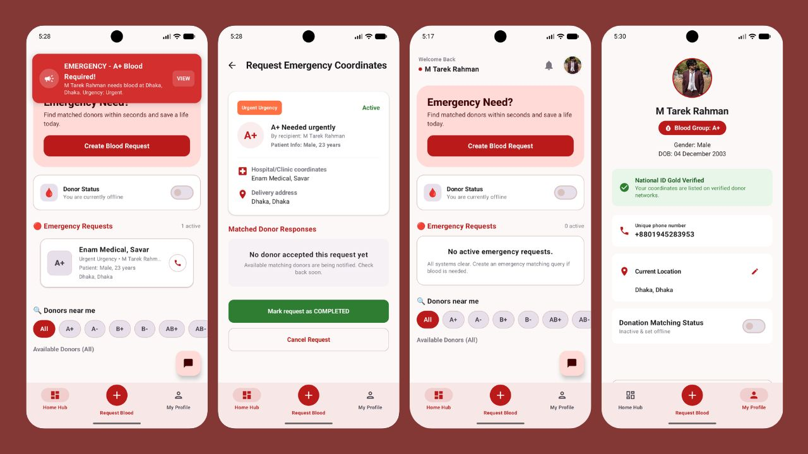
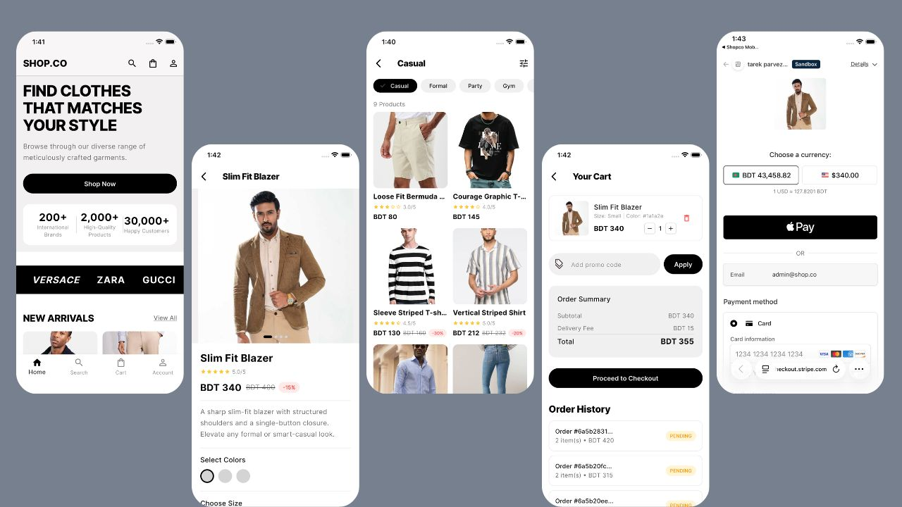

Engineering Projects Archive
A technical repository of production-grade mobile applications, backend services, enterprise platforms, and full-stack systems.
 Android / Kotlin
Android / Kotlin
Weather & Prayer Times System
Native Android app integrating OpenWeather, USGS seismic telemetry, interactive Windy Doppler radar maps, and astronomical calculation algorithms.
- Jetpack Compose declarative UI with zero XML
- Real-time global earthquake feeds via USGS API
- Hardware-accelerated radar map rendering

Mobile / Full-StackBlood Connect Emergency Dispatch
Emergency mobile platform connecting critical blood recipients with nearby donors using geospatial proximity queries and high-priority push notifications.
- Sub-second FCM push notifications for urgent requests
- Spatial MySQL queries for radius matching
- Express.js REST API with connection pooling
 Enterprise / Java
Enterprise / Java
Enterprise E-Learning Platform
Comprehensive course engine supporting Student, Instructor, and Admin roles with automated quiz evaluation pipelines and transactional enrollments.
- Spring Security stateless JWT authentication with RBAC
- Transaction-isolated course enrollment operations
- Normalized relational database schema in MySQL
 Full-Stack / Spring Boot
Full-Stack / Spring Boot
Project Management & Sprint System
Team workflow and sprint planning platform with interactive drag-and-drop Kanban boards, sprint velocity calculations, and PostgreSQL relational backplane.
- Interactive Kanban board with optimistic UI state
- High-performance PostgreSQL queries for team metrics
- Clean layered controller/service/repository boundaries
 Web / MERN
Web / MERN
Modern E-Commerce Web Platform
Full-featured online shopping platform with dynamic multi-attribute product catalog, local-storage synchronized cart state, and JWT authenticated checkout.
- React state management for cart synchronization
- Express REST API with MongoDB aggregation queries
- Secure password hashing and token-based auth

Mobile / FlutterE-Commerce Mobile Application
Cross-platform mobile shopping application built in Flutter featuring real-time inventory streams, payment gateway integration, and user profile management.
- Real-time Firestore stream listeners for instant stock updates
- Cross-platform responsive layout for iOS and Android
- Firebase authentication and user profile storage
 Mobile / SQLite
Mobile / SQLite
Productivity Task Management App
Offline-first productivity mobile app engineered for instant responsiveness, task categorization, custom recurrence scheduling, and local notification triggers.
- 100% offline-first functionality with embedded SQLite
- Scheduled local OS background notification alarms
- Fast indexed queries for task filtering by priority